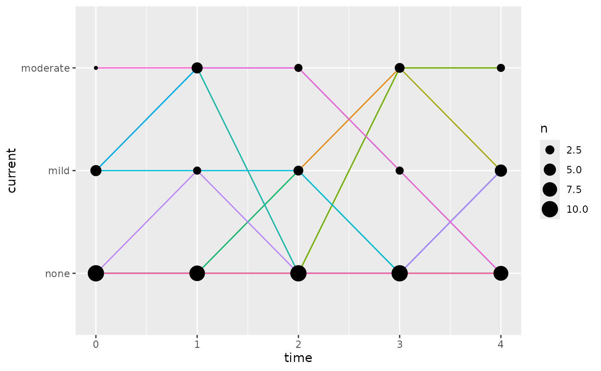

Create your dataset
Start from an initial dataset that has a previous state and a current state column. For this exercise, we will use a hypothetical adverse event profile switching between “none”, “mild”, and “moderate” severities.
dMarkov <-
rbind(
data.frame(
ID = 1,
TIME = 0:4,
previous = c("none", "mild", "moderate", "mild", "mild"),
current = c("mild", "moderate", "mild", "mild", "none")
),
data.frame(
ID = 2,
TIME = 0:4,
previous = c("none", "moderate", "moderate", "none", "none"),
current = c("moderate", "moderate", "none", "none", "none")
),
data.frame(
ID = 3,
TIME = 0:4,
previous = c("none", "mild", "mild", "mild", "none"),
current = c("none", "mild", "mild", "none", "mild")
)
)To make interpretability easier later, put the states in order, if they are not numeric. Putting the levels in order is not required, but if not done, then they will be sorted alphabetically in the modeling which may not make sense (e.g. “none” coming after “moderate”).
stateLevels <- c("none", "mild", "moderate")
dMarkov$previous <- factor(dMarkov$previous, levels = stateLevels)
dMarkov$current <- factor(dMarkov$current, levels = stateLevels)The dataset for estimation requires one-hot encoded columns in the dataset. That more simply means we need columns set to 1 for when a Markov state applies and 0 when it does not.
dMarkov <- createMarkovModelDataset(dMarkov, colPrev = "previous", colCur = "current")
knitr::knit_print(dMarkov)
#> ID TIME previous current prevnone curnone prevmild curmild prevmoderate
#> 1 1 0 none mild TRUE FALSE FALSE TRUE FALSE
#> 2 1 1 mild moderate FALSE FALSE TRUE FALSE FALSE
#> 3 1 2 moderate mild FALSE FALSE FALSE TRUE TRUE
#> 4 1 3 mild mild FALSE FALSE TRUE TRUE FALSE
#> 5 1 4 mild none FALSE TRUE TRUE FALSE FALSE
#> 6 2 0 none moderate TRUE FALSE FALSE FALSE FALSE
#> 7 2 1 moderate moderate FALSE FALSE FALSE FALSE TRUE
#> 8 2 2 moderate none FALSE TRUE FALSE FALSE TRUE
#> 9 2 3 none none TRUE TRUE FALSE FALSE FALSE
#> 10 2 4 none none TRUE TRUE FALSE FALSE FALSE
#> 11 3 0 none none TRUE TRUE FALSE FALSE FALSE
#> 12 3 1 mild mild FALSE FALSE TRUE TRUE FALSE
#> 13 3 2 mild mild FALSE FALSE TRUE TRUE FALSE
#> 14 3 3 mild none FALSE TRUE TRUE FALSE FALSE
#> 15 3 4 none mild TRUE FALSE FALSE TRUE FALSE
#> curmoderate
#> 1 FALSE
#> 2 TRUE
#> 3 FALSE
#> 4 FALSE
#> 5 FALSE
#> 6 TRUE
#> 7 TRUE
#> 8 FALSE
#> 9 FALSE
#> 10 FALSE
#> 11 FALSE
#> 12 FALSE
#> 13 FALSE
#> 14 FALSE
#> 15 FALSEA DV column is required for nlmixr2 to work, but it will
be ignored for this model.
dMarkov$DV <- 0Create your model
To automatically generate a Markov model structure from your data,
use the createMarkovModel() function:
mod <- createMarkovModel(colPrev = dMarkov$previous, colCur = dMarkov$current)
cat(mod)
#> function() {
#> markovStates <- c(none = "none", mild = "mild", moderate = "moderate")
#> ini({
#> logitnonetonone <- -0; label("Probability of transition from state none to none (logit probability)")
#> lognonetomild <- -1.099; label("Probability of transition from state none to mild (log-logit link difference from prior state)")
#> logitmildtonone <- -0.6931; label("Probability of transition from state mild to none (logit probability)")
#> logmildtomild <- -0.6931; label("Probability of transition from state mild to mild (log-logit link difference from prior state)")
#> logitmoderatetonone <- -0.6931; label("Probability of transition from state moderate to none (logit probability)")
#> logmoderatetomild <- -1.099; label("Probability of transition from state moderate to mild (log-logit link difference from prior state)")
#> })
#> model({
#> # Create the following one-hot encoded columns for previous and current Markov states (this can be done with `createMarkovModelDataset()`)
#> # For state none: prevnone, curnone
#> # For state mild: prevmild, curmild
#> # For state moderate: prevmoderate, curmoderate
#> # transition from state "none" to state "none"
#> linknonetonone <- logitnonetonone
#> cumprnonetonone <- expit(linknonetonone)
#> # transition from state "none" to state "mild"
#> linknonetomild <- linknonetonone + exp(lognonetomild)
#> cumprnonetomild <- expit(linknonetomild)
#> # Probability of each state transition
#> prnonetonone <- cumprnonetonone # Probability of transition from state none to none
#> prnonetomild <- cumprnonetomild - cumprnonetonone # Probability of transition from state none to mild
#> prnonetomoderate <- 1 - cumprnonetomild # Probability of transition from state none to moderate
#> # log-likelihood of any transition from state none
#> llnone <- prevnone*(curnone*log(prnonetonone) + curmild*log(prnonetomild) + curmoderate*log(prnonetomoderate))
#> # transition from state "mild" to state "none"
#> linkmildtonone <- logitmildtonone
#> cumprmildtonone <- expit(linkmildtonone)
#> # transition from state "mild" to state "mild"
#> linkmildtomild <- linkmildtonone + exp(logmildtomild)
#> cumprmildtomild <- expit(linkmildtomild)
#> # Probability of each state transition
#> prmildtonone <- cumprmildtonone # Probability of transition from state mild to none
#> prmildtomild <- cumprmildtomild - cumprmildtonone # Probability of transition from state mild to mild
#> prmildtomoderate <- 1 - cumprmildtomild # Probability of transition from state mild to moderate
#> # log-likelihood of any transition from state mild
#> llmild <- prevmild*(curnone*log(prmildtonone) + curmild*log(prmildtomild) + curmoderate*log(prmildtomoderate))
#> # transition from state "moderate" to state "none"
#> linkmoderatetonone <- logitmoderatetonone
#> cumprmoderatetonone <- expit(linkmoderatetonone)
#> # transition from state "moderate" to state "mild"
#> linkmoderatetomild <- linkmoderatetonone + exp(logmoderatetomild)
#> cumprmoderatetomild <- expit(linkmoderatetomild)
#> # Probability of each state transition
#> prmoderatetonone <- cumprmoderatetonone # Probability of transition from state moderate to none
#> prmoderatetomild <- cumprmoderatetomild - cumprmoderatetonone # Probability of transition from state moderate to mild
#> prmoderatetomoderate <- 1 - cumprmoderatetomild # Probability of transition from state moderate to moderate
#> # log-likelihood of any transition from state moderate
#> llmoderate <- prevmoderate*(curnone*log(prmoderatetonone) + curmild*log(prmoderatetomild) + curmoderate*log(prmoderatetomoderate))
#> # Overall Markov model log-likelihood
#> llMarkov <- llnone + llmild + llmoderate
#> ll(err) ~ llMarkov
#> })
#> }At this point, the model is a character string. Use advanced R
methods (with standard R functions) to convert that to a function for
nlmixr2.
The model can subsequently be modified the same as any other
nlmixr2 model, for example to add drug effects, etc.
Fit the model
fit <- nlmixr2est::nlmixr(modFun, data = dMarkov, est = "focei", control = list(print = 0))
#> ℹ parameter labels from comments are typically ignored in non-interactive mode
#> ℹ Need to run with the source intact to parse comments
#> → loading into symengine environment...
#> → pruning branches (`if`/`else`) of full model...
#> ✔ done
#> → finding duplicate expressions in EBE model...
#> [====|====|====|====|====|====|====|====|====|====] 0:00:00
#> → optimizing duplicate expressions in EBE model...
#> [====|====|====|====|====|====|====|====|====|====] 0:00:00
#> → compiling EBE model...
#> ✔ done
#> rxode2 5.0.2 using 2 threads (see ?getRxThreads)
#> no cache: create with `rxCreateCache()`
#> calculating covariance matrix
#> [====|====|====|====|====|====|====|====|====|====] 0:00:00
#> done
#> → Calculating residuals/tables
#> ✔ done
fit
#> ── nlmixr² log-likelihood Population Only (outer: nlminb) ──
#>
#> OBJF AIC BIC Log-likelihood Condition#(Cov) Condition#(Cor)
#> lPop 70.21154 109.7797 114.028 -48.88985 4.404546 1.000178
#>
#> ── Time (sec fit$time): ──
#>
#> setup optimize covariance table compress other
#> elapsed 0.019747 0.002565 0.002567 0.031 0.001 2.322121
#>
#> ── (fit$parFixed or fit$parFixedDf): ──
#>
#> Parameter
#> logitnonetonone Probability of transition from state none to none (logit probability)
#> lognonetomild Probability of transition from state none to mild (log-logit link difference from prior state)
#> logitmildtonone Probability of transition from state mild to none (logit probability)
#> logmildtomild Probability of transition from state mild to mild (log-logit link difference from prior state)
#> logitmoderatetonone Probability of transition from state moderate to none (logit probability)
#> logmoderatetomild Probability of transition from state moderate to mild (log-logit link difference from prior state)
#> Est. SE %RSE Back-transformed(95%CI)
#> logitnonetonone -0.000185 0.0112 6.06e+03 -0.000185 (-0.0221, 0.0218)
#> lognonetomild -1.1 0.0235 2.14 -1.1 (-1.15, -1.05)
#> logitmildtonone -0.693 0.0189 2.73 -0.693 (-0.73, -0.656)
#> logmildtomild -0.693 0.0189 2.73 -0.693 (-0.73, -0.656)
#> logitmoderatetonone -0.693 0.0189 2.73 -0.693 (-0.73, -0.656)
#> logmoderatetomild -1.1 0.0235 2.14 -1.1 (-1.15, -1.05)
#> BSV(SD) Shrink(SD)%
#> logitnonetonone
#> lognonetomild
#> logitmildtonone
#> logmildtomild
#> logitmoderatetonone
#> logmoderatetomild
#>
#> Covariance Type (fit$covMethod): r
#> Information about run found (fit$runInfo):
#> • gradient problems with initial estimate and covariance; see $scaleInfo
#> • last objective function was not at minimum, possible problems in optimization
#> • Hessian reset during optimization; (can control by foceiControl(resetHessianAndEta=.))
#> • bad solve during optimization
#> Censoring (fit$censInformation): No censoring
#> Minimization message (fit$message):
#> false convergence (8)
#> In an ODE system, false convergence may mean "useless" evaluations were performed.
#> See https://tinyurl.com/yyrrwkce
#> It could also mean the convergence is poor, check results before accepting fit
#> You may also try a good derivative free optimization:
#> nlmixr2(...,control=list(outerOpt="bobyqa"))
#>
#> ── Fit Data (object fit is a modified tibble): ──
#> # A tibble: 15 × 29
#> ID TIME DV IPRED linknonetonone cumprnonetonone linknonetomild
#> <fct> <dbl> <dbl> <dbl> <dbl> <dbl> <dbl>
#> 1 1 0 0 -2.49 -0.000185 0.500 0.333
#> 2 1 1 0 -0.601 -0.000185 0.500 0.333
#> 3 1 2 0 -2.56 -0.000185 0.500 0.333
#> # ℹ 12 more rows
#> # ℹ 22 more variables: cumprnonetomild <dbl>, prnonetonone <dbl>,
#> # prnonetomild <dbl>, prnonetomoderate <dbl>, llnone <dbl>,
#> # linkmildtonone <dbl>, cumprmildtonone <dbl>, linkmildtomild <dbl>,
#> # cumprmildtomild <dbl>, prmildtonone <dbl>, prmildtomild <dbl>,
#> # prmildtomoderate <dbl>, llmild <dbl>, linkmoderatetonone <dbl>,
#> # cumprmoderatetonone <dbl>, linkmoderatetomild <dbl>, …Simulate your data
To simulate from a Markov model, you first need to run a typical simulation from the model to get probabilities of each state. Then, post-process the simulation results to get the states.
dSimRaw <- nlmixr2est::nlmixr(fit, est = "rxSolve", control = list(nStud = 5))
#> ℹ use `data` from prior/supplied fit
#> ℹ using population uncertainty from fitted model (`thetaMat`)
#> ℹ using `dfObs=15` from the number of observations in fitted model
#> ℹ using `dfSub=0` from the number of subjects in fitted model
#> ℹ using diagonal `sigma` based on model
#> Warning in FUN(X[[i]], ...): multi-subject simulation without without 'omega'
dSim <- simMarkov(dSimRaw, states = fit$markovStates, initialState = "none", colPrev = "previous", colCur = "current")Summarize the simulations
Simulations can be plotted,
ggplot(dSim, aes(x = time, y = current)) +
geom_line(
aes(colour = paste(sim.id, id), group = paste(sim.id, id)),
show.legend = FALSE
) +
geom_count()
tabulated,
createMarkovTransitionMatrix(colPrev = dMarkov$previous, colCur = dMarkov$current)
#> none mild moderate
#> none 0.5000000 0.3333333 0.1666667
#> mild 0.3333333 0.5000000 0.1666667
#> moderate 0.3333333 0.3333333 0.3333333
createMarkovTransitionMatrix(colPrev = dSim$previous, colCur = dSim$current)
#> none mild moderate
#> none 0.5128205 0.12820513 0.3589744
#> mild 0.0000000 0.12500000 0.8750000
#> moderate 0.4642857 0.07142857 0.4642857or summarized in any other useful way.